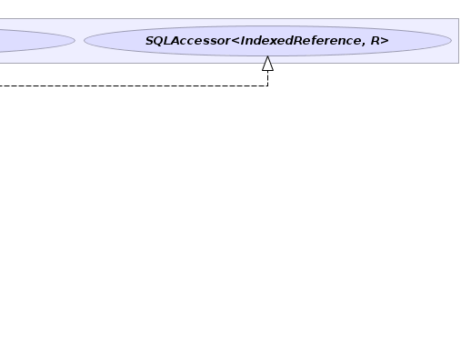
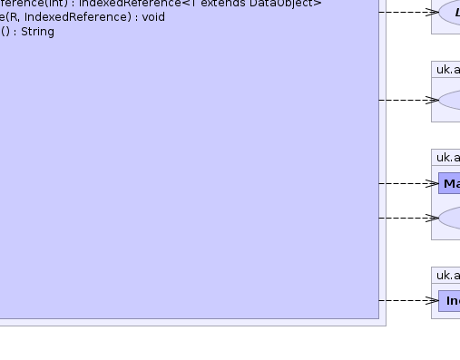
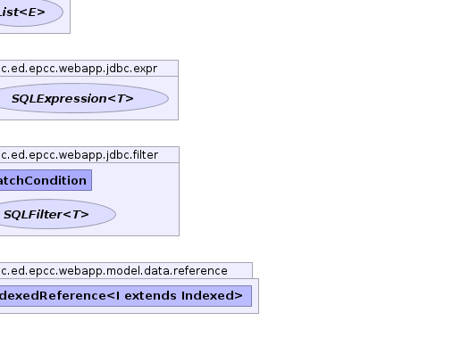

- java.lang.Object
-
- uk.ac.ed.epcc.webapp.model.data.AbstractSelfSQLValue<T,R>
-
- Type Parameters:
T- type of reference/repositoryR- type of filter
- All Implemented Interfaces:
- Accessor<IndexedReference<T>,R>, FilterProvider<R,IndexedReference<T>>, IndexedSQLValue<R,T>, SQLAccessor<IndexedReference<T>,R>, SQLValue<IndexedReference<T>>, Targetted<IndexedReference<T>>
- Direct Known Subclasses:
- SelfSQLValue, TupleSelfSQLValue
public abstract class AbstractSelfSQLValue<T extends DataObject,R> extends java.lang.Object implements SQLAccessor<IndexedReference<T>,R>, FilterProvider<R,IndexedReference<T>>, IndexedSQLValue<R,T>
Field value for a self reference It targets the primary key of the factory. The filter type may be different but the repository is assumed to be added to the query source.- Author:
- spb
- See Also:
SelfSQLValue,TupleSelfSQLValue-


 
  
-
-
Constructor Summary
Constructors Constructor and Description AbstractSelfSQLValue(DataObjectFactory<T> fac)
-
Method Summary
Methods Modifier and Type Method and Description intadd(java.lang.StringBuilder sb, boolean qualify)Add the expression to a StringBuilderbooleancanSet()does thisAccessorsupport setting values.DataObjectFactory<T>getFactory()get the remoteDataObjectFactorySQLFilter<R>getFilter(MatchCondition match, IndexedReference<T> val)Create aSQLFiltercomparing against the target valueSQLExpression<java.lang.Integer>getIDExpression()Get a Integer valuedSQLExpressionfor the id of the referenced value.SQLFilter<R>getNullFilter(boolean is_null)create aSQLFilterchecking if the target value is or is not null.SQLFilter<R>getOrderFilter(boolean descending)create aSQLFilterthat orders results by the target value.java.util.List<PatternArgument>getParameters(java.util.List<PatternArgument> list)Add parameters for this value to a list.SQLFiltergetRequiredFilter()Get an SQLFilter required to be added to the filter set.java.lang.Class<IndexedReference>getTarget()Get the type of the returned object as far as it is known.IndexedReference<T>makeObject(java.sql.ResultSet rs, int pos)Extract a result of the expression from a ResultSet into an object of the specified type.IndexedReference<T>makeReference(int id)voidsetValue(R r, IndexedReference<T> value)Set value if supported otherwise throw aUnsupportedOperationException.java.lang.StringtoString()-
Methods inherited from class java.lang.Object
clone, equals, finalize, getClass, hashCode, notify, notifyAll, wait, wait, wait
-
Methods inherited from interface uk.ac.ed.epcc.webapp.jdbc.expr.IndexedSQLValue
getSQLFilter
-
Methods inherited from interface uk.ac.ed.epcc.webapp.jdbc.expr.FilterProvider
getFilterType
-
-
-
-
Constructor Detail
-
AbstractSelfSQLValue
public AbstractSelfSQLValue(DataObjectFactory<T> fac)
-
-
Method Detail
-
getIDExpression
public SQLExpression<java.lang.Integer> getIDExpression()
Description copied from interface:IndexedSQLValueGet a Integer valuedSQLExpressionfor the id of the referenced value. This is used to provide match filters for two references.- Specified by:
getIDExpressionin interfaceIndexedSQLValue<R,T extends DataObject>- Returns:
SQLExpression
-
add
public final int add(java.lang.StringBuilder sb, boolean qualify)Description copied from interface:SQLValueAdd the expression to a StringBuilder- Specified by:
addin interfaceSQLValue<IndexedReference<T extends DataObject>>- Parameters:
sb- StringBuilder to modifyqualify- boolean should fields be qualified with the table name- Returns:
- number of fields added
-
getParameters
public final java.util.List<PatternArgument> getParameters(java.util.List<PatternArgument> list)
Description copied from interface:SQLValueAdd parameters for this value to a list.- Specified by:
getParametersin interfaceSQLValue<IndexedReference<T extends DataObject>>- Parameters:
list- to modify- Returns:
- modified list of parameter objects
-
makeObject
public final IndexedReference<T> makeObject(java.sql.ResultSet rs, int pos) throws DataException
Description copied from interface:SQLValueExtract a result of the expression from a ResultSet into an object of the specified type. Note that this method is also used to extract the result of functions over the result type.- Specified by:
makeObjectin interfaceSQLValue<IndexedReference<T extends DataObject>>- Throws:
DataException- Parameters:
rs- ResultSet- Returns:
- produced object
-
makeReference
public final IndexedReference<T> makeReference(int id)
-
getTarget
public final java.lang.Class<IndexedReference> getTarget()
Description copied from interface:TargettedGet the type of the returned object as far as it is known. This method is used for run-time type checking The result objects will always be assignable to the type returned by this method.- Specified by:
getTargetin interfaceTargetted<IndexedReference<T extends DataObject>>- Returns:
- Class object for return type
-
toString
public java.lang.String toString()
- Overrides:
toStringin classjava.lang.Object
-
getRequiredFilter
public final SQLFilter getRequiredFilter()
Description copied from interface:SQLValueGet an SQLFilter required to be added to the filter set. This is usually to implement a join.- Specified by:
getRequiredFilterin interfaceSQLValue<IndexedReference<T extends DataObject>>- Returns:
- null of SQLFilter
-
canSet
public final boolean canSet()
Description copied from interface:Accessordoes thisAccessorsupport setting values.- Specified by:
canSetin interfaceAccessor<IndexedReference<T extends DataObject>,R>- Returns:
-
setValue
public final void setValue(R r, IndexedReference<T> value)
Description copied from interface:AccessorSet value if supported otherwise throw aUnsupportedOperationException.- Specified by:
setValuein interfaceAccessor<IndexedReference<T extends DataObject>,R>
-
getFilter
public final SQLFilter<R> getFilter(MatchCondition match, IndexedReference<T> val) throws CannotFilterException
Description copied from interface:FilterProviderCreate aSQLFiltercomparing against the target value- Specified by:
getFilterin interfaceFilterProvider<R,IndexedReference<T extends DataObject>>- Throws:
CannotFilterException- Returns:
SQLFilter
-
getNullFilter
public final SQLFilter<R> getNullFilter(boolean is_null) throws CannotFilterException
Description copied from interface:FilterProvidercreate aSQLFilterchecking if the target value is or is not null.- Specified by:
getNullFilterin interfaceFilterProvider<R,IndexedReference<T extends DataObject>>- Throws:
CannotFilterException- Returns:
SQLFilter
-
getOrderFilter
public final SQLFilter<R> getOrderFilter(boolean descending) throws CannotFilterException
Description copied from interface:FilterProvidercreate aSQLFilterthat orders results by the target value. This may involve joins so may not be just anOrderFilterthough it will contain one.- Specified by:
getOrderFilterin interfaceFilterProvider<R,IndexedReference<T extends DataObject>>- Throws:
CannotFilterException- Returns:
SQLFilter
-
getFactory
public final DataObjectFactory<T> getFactory()
Description copied from interface:IndexedSQLValueget the remoteDataObjectFactory- Specified by:
getFactoryin interfaceIndexedSQLValue<R,T extends DataObject>- Returns:
DataObjectFactory
-
-